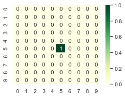
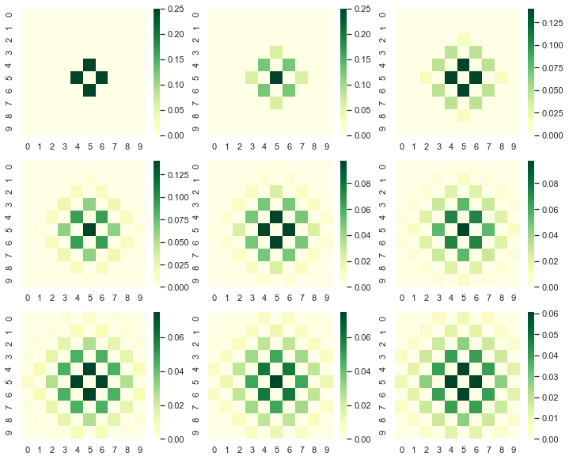
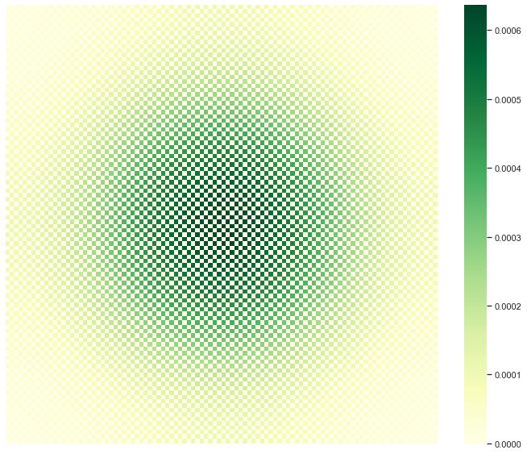

Diffusion Patterns
Read more about diffusion here
import numpy as np import json import random as random import math as math import matplotlib.pyplot as plt import seaborn as sns sns.set()
Consider a 2D lattice of length L
L = 10
Create initial configuration:
We can use a vacant list to create initial configuration where initially particle is at middle of the lattice.
def start(L): '''create a vacant list of list ''' P = [[0 for i in range(L)]for j in range(L)] '''put particle at center''' P[int(L/2)][int(L/2)] = 1 return P
P =start(L)
P
[[0, 0, 0, 0, 0, 0, 0, 0, 0, 0], [0, 0, 0, 0, 0, 0, 0, 0, 0, 0], [0, 0, 0, 0, 0, 0, 0, 0, 0, 0], [0, 0, 0, 0, 0, 0, 0, 0, 0, 0], [0, 0, 0, 0, 0, 0, 0, 0, 0, 0], [0, 0, 0, 0, 0, 1, 0, 0, 0, 0], [0, 0, 0, 0, 0, 0, 0, 0, 0, 0], [0, 0, 0, 0, 0, 0, 0, 0, 0, 0], [0, 0, 0, 0, 0, 0, 0, 0, 0, 0], [0, 0, 0, 0, 0, 0, 0, 0, 0, 0]]
Make a plot of the lattice.
plt.figure(figsize = [8,6]) sns.heatmap(P,annot=True,cmap='YlGn')
<matplotlib.axes._subplots.AxesSubplot at 0x1a1dafde48>

Create a function to diffuse a particle:
$$ P[i,j] = P[i+1,j] + P[i-1,j] + P[i,j+1] + P[i,j-1]$$
def diffuse_primitive(P,L): '''create vacant list of list''' PP = [[0 for i in range(L)]for j in range(L)] for i in range(L): for j in range(L): '''diffuse one step''' PP[i][j] = P[i+1][j] + P[i-1][j] + P[i][j+1] + P[i][j-1] '''normalize''' PP = PP/np.sum(PP) return PP
L =10 P =start(L) #P = diffuse_primitive(P,L)
Set boundary conditons
- Lower limit
P[0-1,j] = P[L,j] P[I,0-1] = P[i,L]
- Upper Limit
P[L+1,j] = P[o,j] P[i,L+1] = P[i,0]
def diffuse(P,L): '''create vacant list of list''' PP = [[0 for i in range(L)]for j in range(L)] '''diffuse 1-step over supplied configuration''' for i in range(L): for j in range(L): '''set boundary condition at bottom and left''' ni =0; nj =0 if i==0:ni = L if j==0:nj = L '''add modulo to control boundary at top and right''' PP[i][j] = P[(i+1)%L][j] + P[(i-1) + ni][j]\ + P[i][(j+1)%L] + P[i][(j-1)+nj] '''normalize''' PP = PP/np.sum(PP) return PP
L =10 P =start(L) plt.figure(figsize = [20,15]) plt.subplot(3,3,1) P = diffuse(P,L) sns.heatmap(P,annot=True,cmap='YlGn') plt.subplot(3,3,2) P = diffuse(P,L) sns.heatmap(P,annot=True,cmap='YlGn') plt.subplot(3,3,3) P = diffuse(P,L) sns.heatmap(P,annot=True,cmap='YlGn') plt.subplot(3,3,4) P = diffuse(P,L) sns.heatmap(P,annot=False,cmap='YlGn') plt.subplot(3,3,5) P = diffuse(P,L) sns.heatmap(P,annot=False,cmap='YlGn') plt.subplot(3,3,6) P = diffuse(P,L) sns.heatmap(P,annot=False,cmap='YlGn') plt.subplot(3,3,7) P = diffuse(P,L) sns.heatmap(P,annot=False,cmap='YlGn') plt.subplot(3,3,8) P = diffuse(P,L) sns.heatmap(P,annot=False,cmap='YlGn') plt.subplot(3,3,9) P = diffuse(P,L) sns.heatmap(P,annot=False,cmap='YlGn') plt.savefig('plot/diffuse-step.pdf') plt.show()

Run the diffusion step with desire no of running steps
def run_diffuse(P,nrun,L): run = 0 '''diffuse N times''' while run < nrun: P = diffuse(P,L) run = run+1 return P
We can make a plot of arbitraty diffusion step by selecting "irun" in function runner.
'''set parameters''' L = 100 ; nrun = 1000 ; P = start(L) '''run diffusion''' P = run_diffuse(P,nrun,L)
plt.figure(figsize = [12,10]) sns.heatmap(P,annot=False,cmap='YlGn') plt.savefig('plot/diffuse.pdf') plt.show()

Much Finner
L = 200 nrun = 1000 P = start(L) '''run diffusion''' P = run_diffuse(P,nrun,L)
plt.figure(figsize = [12,10]) sns.heatmap(P,annot=False,cmap='YlGn') plt.savefig('plot/diffuse-finner.pdf') plt.show()